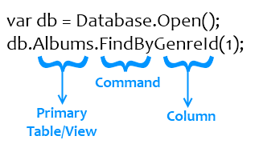
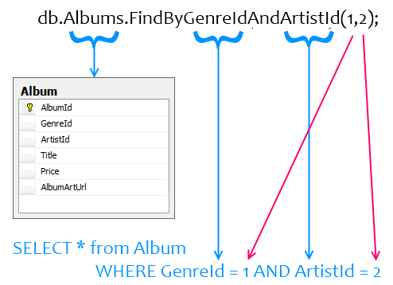

One of the great features of Simple.Data is that it interprets method and property names at runtime and maps them to your underlying data-store using a convention-based approach.

The convention is as follows.
All method calls start with a reference to the database which you generate by calling one of the four Database.Open() methods.
The primary table or view in your query is specified next. When the database is eventually queried for data (Simple.Data is late-binding by default), it first checks to see if the given name exists as either a table or a view. If it doesn’t, it checks to see whether the given name is singular or plural and then checks whether the plural or singular form of the word is the correct name instead.
In the example above, the name of the table targeted is actually Album rather than Albums. Simple.Data first retrieves a list of tables and views from the INFORMATION_SCHEMA.TABLES system table and attempts to find the target name within them.
It tries an exact match first (Albums)
Then it tries a case-insensitive match (albums)
Then a pluralized version if the string ‘is not a plural’ (Albums)
Finally a singularized version if the string ‘is a plural’ (Album)
You can also specify a database schema to identify the correct table or view. For example, Album is a table in the dbo schema.
db.dbo.Albums.FindByGenreId(1);
The general form of this syntax is
DatabaseReference.[schema_name.]Table_or_View.method();
Simple.Data contains twenty methods for data retrieval and manipulation (see list here). One of those methods is specified next.
If you choose to use one of the eight methods ending in “By”, for example FindBy(), you must also specify at least one column in the primary table or view by which to filter your search along with a value for it. For example,
db.Albums.FindByGenreId(1);
will resolve into a query searching for all rows in the Album table where GenreId is set to 1.
Additional criteria can be added by concatenating more column names to the end of the method name, separated by “And”, with the column values set in the arguments to the method. For example,
db.Albums.FindByGenreIdAndArtistId(1,1);

Note that Simple.Data will also attempt to resolve names by removing all characters except for alpha-numerics and underscores from object names, and forcing all names to lower case.
So, for example, Albums.GenreId will match all of:
And other such variations.